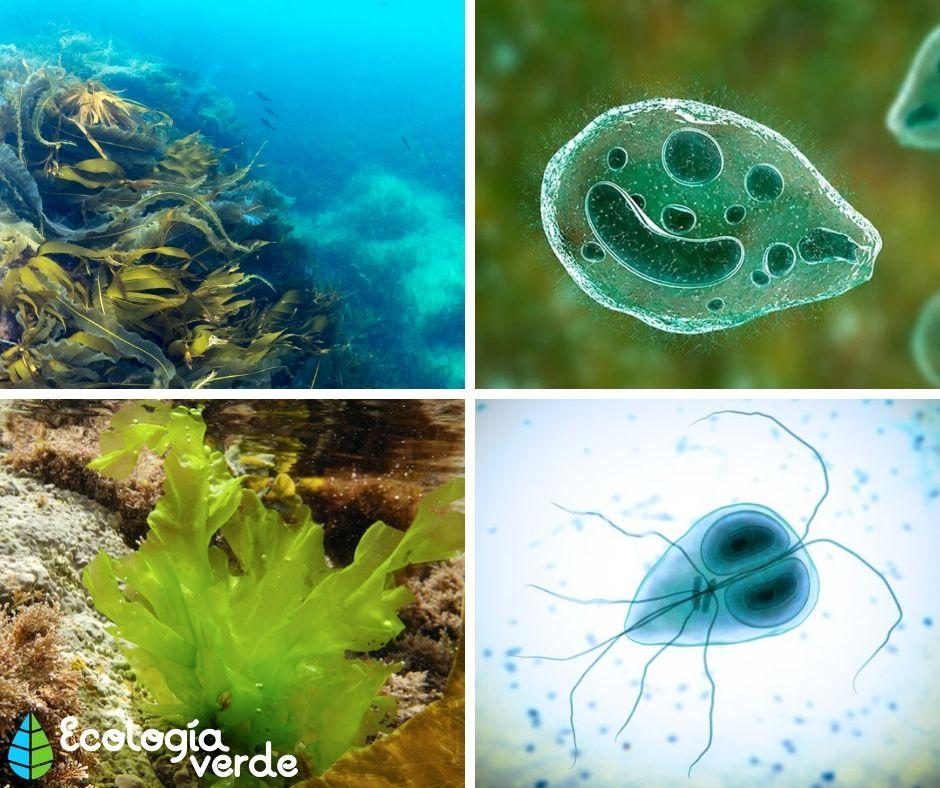

El reino protista, también llamado protoctista, es uno de los grupos en que la biología clasifica los seres vivos eucariotas que no pueden ser clasificados como animales, plantas ni hongos. El reino protista es un grupo parafilético (no contiene a todos los descendientes de un antepasado común) y agrupa a un conjunto muy diverso de organismos generalmente unicelulares o pluricelulares simples que no forman tejidos, tanto autótrofos como heterótrofos. Su enorme variedad hace que sea difícil caracterizarlos, excepto en los rasgos comunes de todo ser eucariótico, o sea, poseedor de células con un núcleo celular definido.
El reino protista no es un grupo monofilético, es decir, todos los organismos incluidos en él no evolucionaron a partir de un ancestro común. En la clasificación biológica que les atribuye el estatus de reino (la de Robert Whittaker en 1969), las características que agrupan a los protistas son las de ser organismos eucariotas unicelulares o pluricelulares simples que no forman ningún tipo de tejido. Excepto su relativa simpleza evolutiva, no hay demasiado en común entre los distintos protistas, que presentan distintos modelos de nutrición, reproducción, locomoción y estructuras celulares.
El reino de los protistas tradicionalmente se divide en supergrupos muy distintos entre sí.
Los protistas pueden poseer metabolismos autótrofos o heterótrofos, dependiendo de si tienen cloroplastos (clorofila) para llevar a cabo la fotosíntesis o si, en cambio, carecen de ellos y deben alimentarse de la materia orgánica circundante (mediante la ósmosis o la ingestión o fagocitosis). Muchos de ellos poseen ambos mecanismos de nutrición de manera simultánea, y algunos llevan una existencia parásita: se introducen en organismos pluricelulares y se alimentan de ellos, causando enfermedades. Sin embargo, los protistas son originalmente aerobios (emplean el oxígeno para sus procesos metabólicos), con excepción de aquellos que evolucionaron para vivir en ambientes en los que el oxígeno escasea.


La reproducción de los protistas puede ser tanto sexual como asexual, y en ocasiones una misma especie puede alternar entre un modelo y otro, de acuerdo a las condiciones del medio ambiente. La reproducción sexual se da mediante la generación de gametos y la fusión celular, mientras que la asexual se da por fisión celular y mitosis.
Los protistas son un grupo diverso y difícil de clasificar, pero fundamental para el surgimiento de la vida tal como la conocemos. Fueron los primeros organismos eucarióticos en surgir en los mares primitivos de la Tierra y, a partir de ellos, la vida tomó diversos rumbos evolutivos, y originó el resto de los reinos de eucariotas: plantas, animales y hongos. Los protistas constituyen un peldaño previo y relativamente común a todas estas formas de vida eucariótica, incluida la humana, y su estudio es también el estudio de la eucariogénesis, es decir, de la aparición del núcleo celular en la historia evolutiva de los procariotas primitivos.